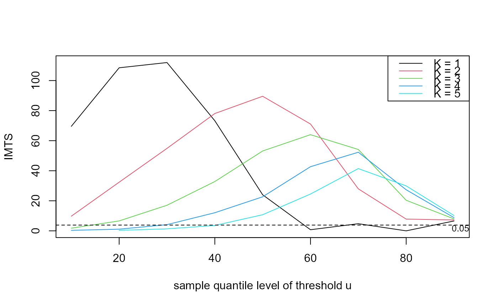
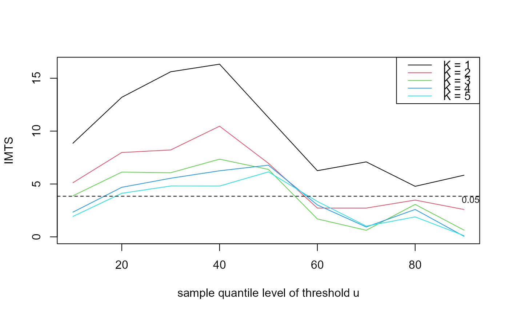

R/choose_uk.R
choose_uk.RdCreates data for a plot to aid the choice of the threshold and
run parameter \(K\) for the \(K\)-gaps estimator (see
kgaps). plot.choose_uk creates the plot.
choose_uk(data, u, k = 1)
| data | A numeric vector of raw data. No missing values are allowed. |
|---|---|
| u, k | Numeric vectors. |
An object (a list) of class c("choose_uk", "exdex")
containing
an object of class c("kgaps_imt", "exdex") returned
from kgaps_imt.
a length(u) by length(k) matrix.
Element (i,j) of theta contains an object (a list) of class
c("kgaps", "exdex"), a result of a call
kgaps(data, u[j], k[i]) to kgaps.
For each combination of threshold in u and \(K\)
in k the functions kgaps and kgaps_imt
are called in order to estimate \(\theta\) and to perform the
information matrix test of Suveges and Davison (2010).
Suveges, M. and Davison, A. C. (2010) Model misspecification in peaks over threshold analysis, The Annals of Applied Statistics, 4(1), 203-221. https://doi.org/10.1214/09-AOAS292
kgaps for maximum likelihood estimation of the
extremal index \(\theta\) using the \(K\)-gaps model.
kgaps_imt for the information matrix test under the
\(K\)-gaps model
plot.choose_uk to produce the diagnostic plot.
### S&P 500 index # Multiple thresholds and run parameters u <- quantile(sp500, probs = seq(0.1, 0.9, by = 0.1)) imt_theta <- choose_uk(sp500, u = u, k = 1:5) plot(imt_theta)# One run parameter K, many thresholds u u <- quantile(sp500, probs = seq(0.1, 0.9, by = 0.1)) imt_theta <- choose_uk(sp500, u = u, k = 1) plot(imt_theta)# One threshold u, many run parameters K u <- quantile(sp500, probs = 0.9) imt_theta <- choose_uk(sp500, u = u, k = 1:5) plot(imt_theta)### Newlyn sea surges u <- quantile(newlyn, probs = seq(0.1, 0.9, by = 0.1)) imt_theta <- choose_uk(newlyn, u = u, k = 1:5) plot(imt_theta, uprob = TRUE)